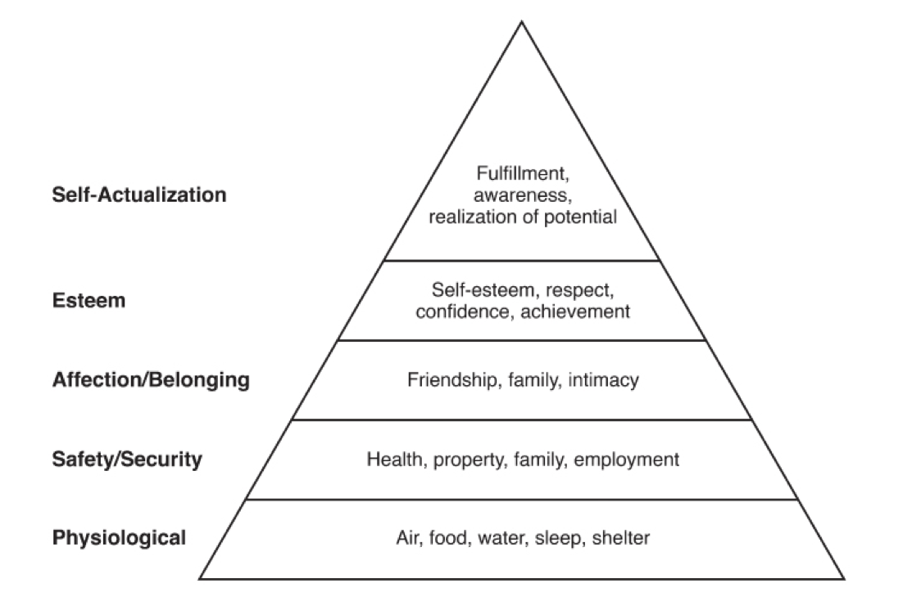

Finding Customer Needs
How you find customer needs? Learn why you need to work to get them.

Product Management is about finding a solution to a problem instead of trying to fit a problem to a solution. A problem represents one or more needs of a specific customer segment.
Finding customer needs can be challenging. Sometimes customers don’t reveal them in a clear way during interviews or they are just not aware of them.
It is the job of a Product Manager to build up and validate the knowledge about the problem space. The way to get there is by carefully listening to what customers say and observing what they do.
On this section
Identify Customer Needs
Customer needs have many ways to describe them. People often call them customer benefits, desires or wants, pain points or user goals. Yet what they all have in common is that they communicate customer’s perspective.
Customers have a hard time talking about their needs. They hide them. Product Managers need to read between lines to get these unmentioned needs. Also, unknown needs can be hiding too. Sometimes customers don’t realize an existing need until they talk about it.
User interviews are the perfect tool to get customer needs. They help to better understand the problem space.
Understand Customer Needs
Discovery interviews help Product Managers to learn how clear the customer benefits are. They try to validate the hypothesis about the target customer by asking questions.
Customers can use different wording to describe the same idea. Either by different jargon or level of detail. But after a while, how customers think and what’s important to them becomes obvious.
Winning products come from the deep understanding of the user’s needs combined with an equally deep understanding of what’s just now possible - Mary Cagan
Needs Hierarchy
Another interesting thing about customer needs is that they usually have hierarchies. This increases complexity when addressing them since dependencies may exist. Another reason why exploring the problem space is so important.
The most common example of this is Abraham Maslow’s hierarchy of human needs:
 From Dan Olsen’s book. Resources section.
Product Managers need to understand that higher level needs don’t matter to customers if they don’t meet lower needs first.
Feature Requests and Ideas
Most of the time, Product Managers will get a list of ideas or feature requests from stakeholders. The biggest mistake they can make is to start building them right away.
First of all, they need to understand what the real problem behind them is. There is an old technique called the 5 Whys. The goal is to keep asking why until the root cause of the problem emerges.
Second, they need to take a hard look at the idea and decide if it is something worth pursuing. A good idea may not be a good fit now until later in the roadmap.
Where Ideas Come From
New ideas come from anywhere at the company. From executives, customers, internal teams, sales or marketing staff to industry reports.
Despite popular belief, the job of a Product Manager is not about being the “idea person”. Their job is to know more than anyone else what’s possible and what’s important for the customer. They use all inputs and act upon them.
The four main places where ideas come from are:
- Employees: Ideas coming from your coworkers, management, and yourself.
- Metrics: Problems and inefficiencies you find when looking how users use your product.
- Users: User feedback from forums, chats and emails.
- Clients: Functionality required from the people who pay the product.
Product Mangers need to learn how to say no and manage expectations accordingly. At the same time, they need full collaboration from these places to create a winning product.
This is a first draft and a just a glance of where ideas come from. Take the time to learn from the resources below. We keep them up to date!
Do you have any feedback? Please, let us know here.